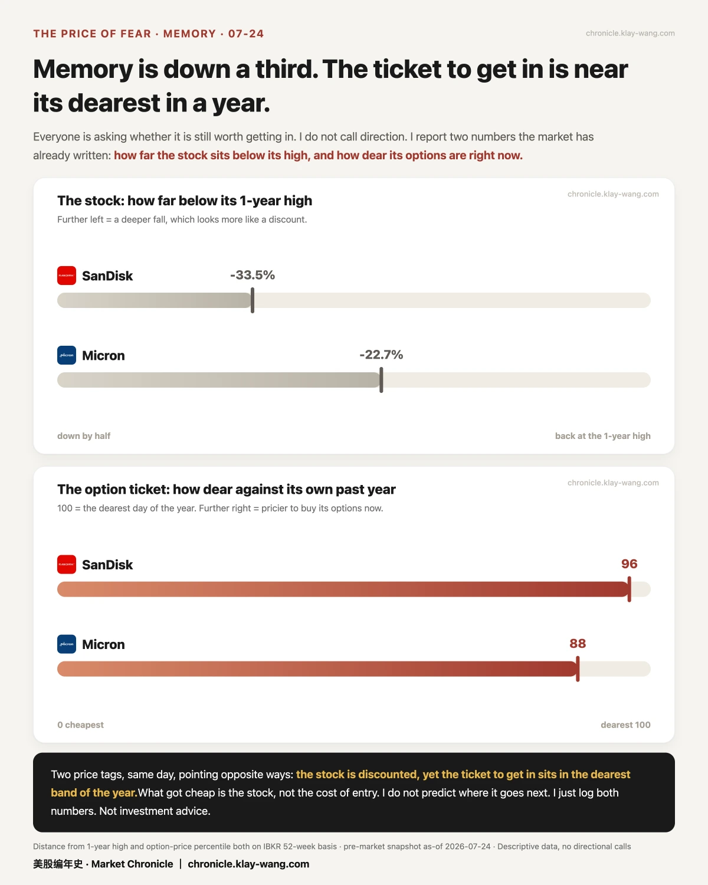
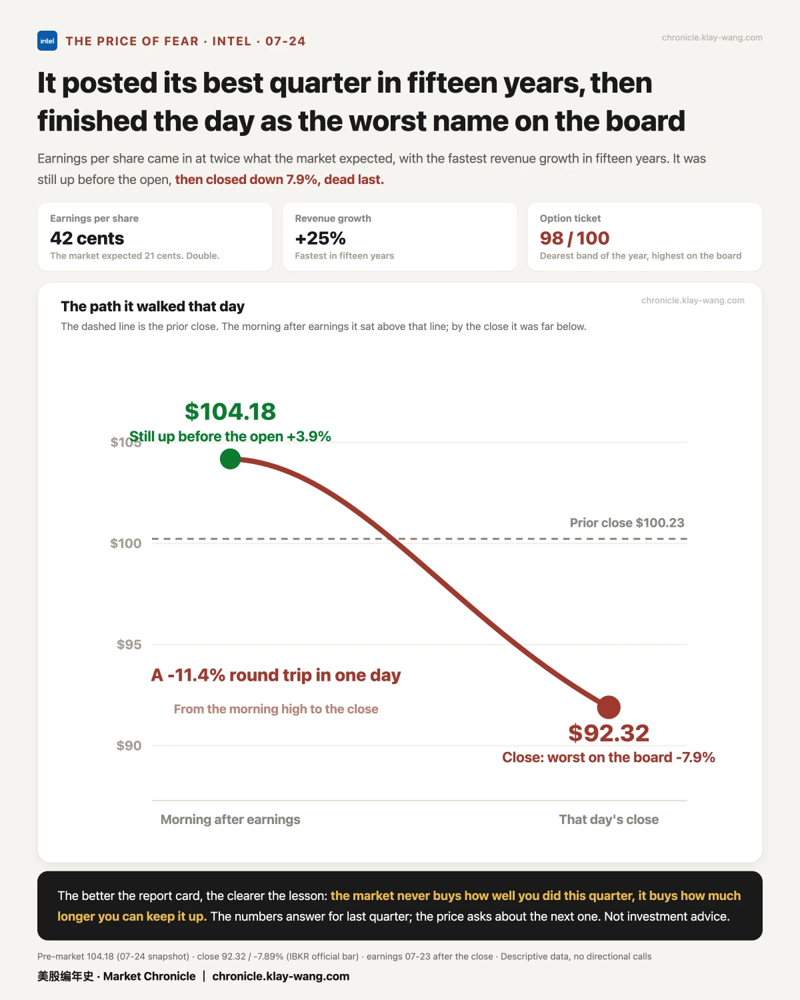
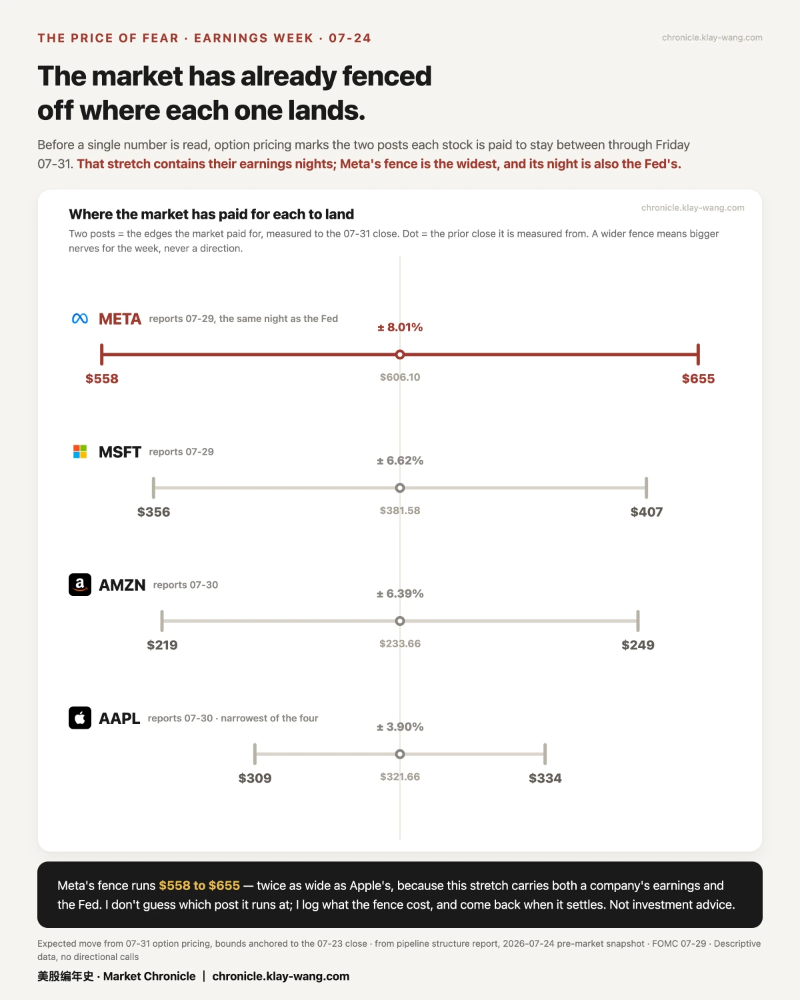
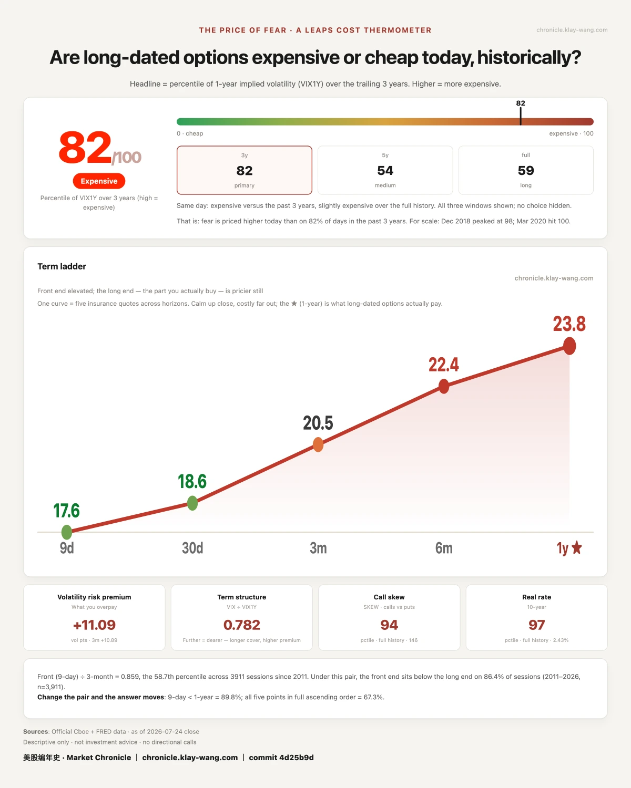

存储跌了三成， 上车的票反而更贵了· 07-25 · 7.20-7.24
• Only one still at the summit: everyone else is 12–39% below their one-year highs. Apple is 0.58% away
• Eyeing the memory dip? The stocks fell ~30%, but the option ticket price sits in the most expensive tier of the year. The stock got cheap — boarding didn't
• Will next week keep falling? We don't guess. But the fences for four mega-cap earnings are already built — Meta's is the widest, twice Apple's
⛰️ First, the map: who's still at the summit
One line: the money didn't leave the market. It just moved houses.
Line up how far each stock sits below its own one-year high and the spread is startling: Apple is 0.58% from the top — practically standing on it. Nvidia is 12.5% below, Google 21.8%. Then Intel −35%, Tesla −37%, SanDisk −39%.
Same market, same day. Being at the summit doesn't make a stock a better buy — it only tells you where the sheltering money went today.
🎟️ Before you board the memory trade, check the ticket price
One line: the stock is what got cheap. Boarding is not.
Everyone asks if it's time to get in. We don't guess. We report two numbers already written on the market.
First: SanDisk sits 33.5% below its one-year high; Micron 22.7%. Looks like a discount.
Second: the ticket price — the cost of buying their options — ranks in the 96th percentile of the past year for SanDisk, 88th for Micron (100 = the most expensive day of the year). The ticket is in the top tier.
Two price tags pointing in opposite directions. Dip buyers think they're getting a bargain, but the boarding ticket is the most expensive of the year.
🧾 Best report card in fifteen years — and the worst seat in the house
One line: the market never buys last quarter's grades. It buys how long the good times last.
Intel's report: 42 cents of earnings per share against 21 expected — double. Fastest revenue growth in nearly fifteen years.
Before the open it was up 3.9%, touching 104.18. It closed at 92.32, down 7.9%, worst in the group. From the morning high to the close: −11.4% in a single day.
Its option ticket is also the most expensive in the group: 98th percentile. The numbers answered last quarter. The price is asking about the next one.
🚧 Next week's fences are already built
One line: we don't guess directions. We report the boundaries the market has already paid for.
Four mega caps report next week. Option prices have already staked out where each stock is expected to stay through Friday 07-31 (a window that contains their earnings nights):
- Meta ±8.01%, from $558 to $655. Its earnings night doubles as Fed decision night — two grenades, one evening
- Microsoft ±6.62% | Amazon ±6.39%
- Apple ±3.90%, the narrowest of the four ： half of Meta's

Two footnotes
Amazon's book leans hardest: in contracts expiring 07-31, bets on up outnumber bets on down 3.4 to 1. It doesn't say who wins — only that if the result goes the other way, far more faces get slapped. (Every contract has a buyer and a seller; the ratio isn't anyone's opinion.)
Nvidia holds the cheapest ticket in the room: 53rd percentile while everyone else sits in the 90s — its earnings are a month away, so this week carries no grenade to defuse.
📒 And one for the record: we were wrong
One line: every call we publish comes back for settlement — wins and losses alike.
On 07-22 we called that Google and Tesla would both stay inside their expected ranges after earnings (the range sellers win). Both fell through the floor: Google closed 319.74 against a floor of 329.17; Tesla closed 313.03 against 359.85.
Called it wrong. The scoreboard takes a loss. That's worth more than only posting wins.
🌡 The fear thermometer: 82 / 100
The thermometer measures one thing: how much the market is paying right now to insure the next year. The pricier the insurance, the more afraid the market. Today it reads 82 — that insurance is priced near the top of the past three years.
Short-term fear collapsed fast this week. The long-term kind didn't get a cent cheaper. Short-term panic finds takers. Long-term fear finds no discount sellers.






No investment advice. No direction calls. No market timing.